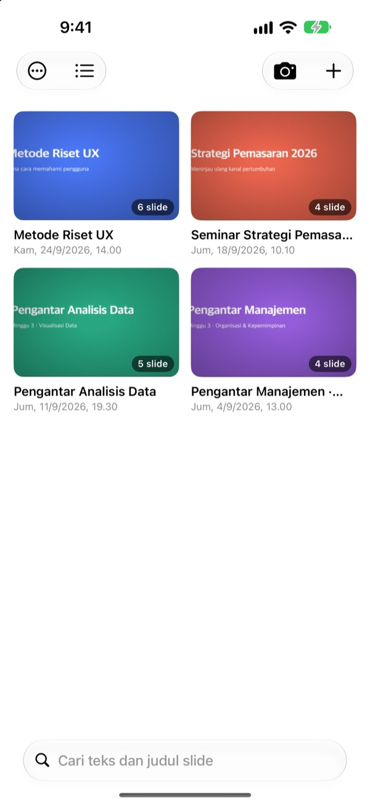
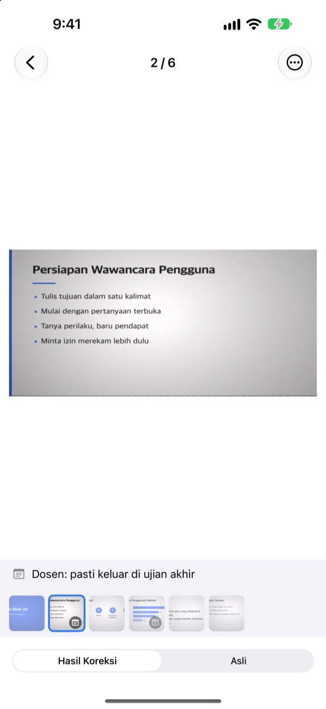
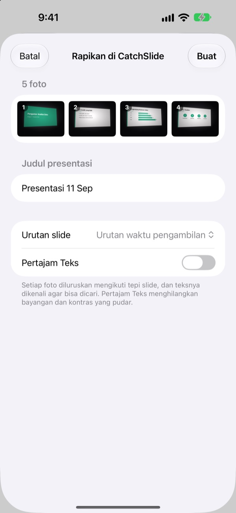
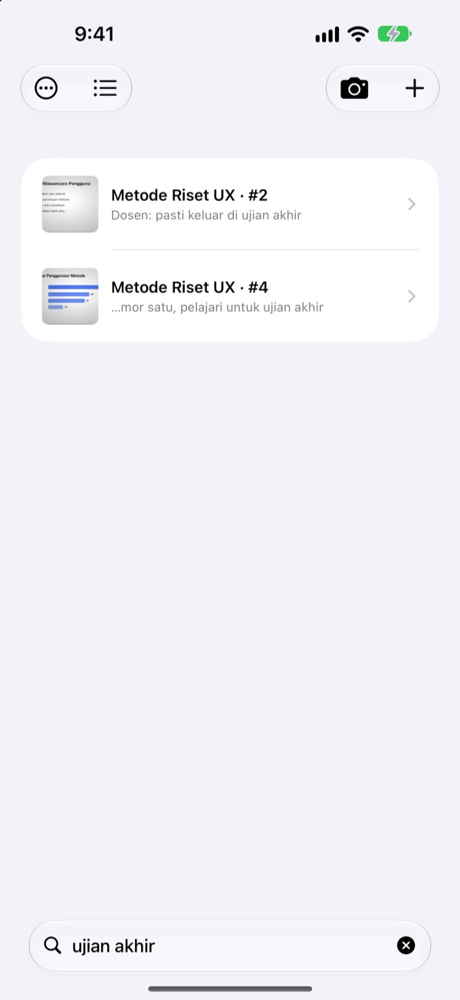

Difoto dari samping.
Tersimpan dari depan.
Kamera menemukan keempat sudut slide, meluruskannya, lalu memotong semua yang ada di sekitarnya. Slide yang Anda foto berurutan masuk ke presentasi yang sama.
Sekali beli, semua fitur. Tanpa langganan, tanpa akun.

Coba luruskan sendiri
Foto ini diambil miring dari kursi samping di ruang kuliah. Garis hijau menunjukkan sudut slide yang ditemukan.
Pernah buka galeri untuk belajar, tapi slide-nya tidak ketemu?
Slide yang difoto dari barisan belakang selalu miring dan tenggelam di antara swafoto dan struk belanja. Di ruang kuliah yang hening, bunyi rana saja sudah bikin ragu. CatchSlide memotret tanpa suara, meluruskan setiap slide, dan menyimpannya bersama per presentasi.
Lurus sejak dipotret
Kamera mengikuti keempat sudut slide secara langsung dan berubah hijau saat sudah menangkapnya. Meski difoto miring, slide diluruskan seperti dilihat dari depan, tanpa latar belakang.
Tidak ada bunyi rana. Nyalakan Ambil otomatis dan setiap slide baru akan dipotret sendiri, sementara foto yang goyang dilewati.

Foto lama, sekaligus
Pilih beberapa foto kuliah di app Foto lalu bagikan ke CatchSlide. Foto-foto itu diluruskan dan disimpan sebagai satu presentasi, sesuai urutan pengambilannya.Pertajam Teks menghapus bayangan dan kontras yang pudar.

Cukup satu kata
CatchSlide membaca teks di setiap slide langsung di perangkat Anda. Berminggu-minggu kemudian pun, satu kata sudah cukup untuk menemukan slide itu.
Catatan di slide juga bisa dicari. Tulis UAS di beberapa slide, dan semua materi ujian muncul dalam sekali cari.

Mulai dalam tiga langkah
- 1
Buka kamera
Dari tombol kamera di daftar, widget di Layar Utama, atau Layar Terkunci.
- 2
Bingkai slide-nya
Saat sudut berubah hijau, ketuk rana atau biarkan ambil otomatis yang bekerja.
- 3
Buka lagi per presentasi
Cari, tambahkan catatan, dan ekspor PDF untuk belajar.
Yang bisa dilakukan dengan satu presentasi
- Rekaman
- Rekam sambil memotret, lalu putar setiap slide mulai dari saat slide itu difoto
- Transkripsi
- Mengubah rekaman jadi teks, menampilkan apa yang diucapkan di tiap slide, dan ikut dalam pencarian
- Ringkasan AI
- Meringkas presentasi dari teks slide dan transkrip (iOS 26 atau lebih baru di perangkat yang mendukung Apple Intelligence)
- Bahan belajar berisi satu, dua, atau empat slide per halaman
- Markdown
- File .zip yang siap masuk ke Notion atau Obsidian
- PowerPoint
- Ekspor .pptx dengan transkrip di catatan pembicara
- Gabungkan
- Pilih beberapa presentasi lalu satukan
- Sinkronisasi iCloud
- Nyalakan untuk melihat presentasi di perangkat lain dengan Apple ID yang sama. Mati secara bawaan
- Widget
- Membuka kamera langsung dari Layar Utama atau Layar Terkunci
Pengenalan teks, transkripsi, dan ringkasan AI semuanya berjalan di perangkat Anda.
Sekali beli, dapat semuanya
CatchSlide
- Foto tanpa suara, ambil otomatis, dan pelurusan
- Impor banyak foto sekaligus dari app Foto
- Slide per presentasi, cari di teks dan catatan
- Rekaman, transkripsi, dan ringkasan AI
- Ekspor ke PDF, Markdown, dan PowerPoint
- Sinkronisasi iCloud dan widget
Tip (opsional)
- Kalau aplikasi ini membantu, Anda bisa memberi tip kecil untuk pengembang
- Tip tidak membuka fitur apa pun. Semua fitur tetap bisa dipakai tanpa tip
Ada di layar Info Saya.
Tanpa langganan dan tanpa pembelian untuk membuka fitur. Lihat harga di negara Anda di App Store.
Pertanyaan umum
Bagaimana cara memotret slide?
Buka kamera dan bingkai slide-nya. Saat sudut berubah hijau, ketuk rana. Jika ambil otomatis menyala, slide berikutnya dipotret sendiri setiap kali slide berganti.
Apakah ada bunyi rana?
Tidak. Gambar disimpan langsung dari kamera, jadi tetap senyap di negara mana pun.
Kenapa foto-foto saya masuk ke satu presentasi?
Jika foto berikutnya diambil kurang dari 5 menit setelah foto sebelumnya, foto itu dianggap bagian dari presentasi yang sama. Ketuk judul di daftar untuk mengganti nama, dan pakai Gabungkan Presentasi untuk menyatukan yang terpisah.
Bisakah saya menambahkan foto yang sudah ada?
Bisa. Pilih fotonya di app Foto lalu bagikan ke CatchSlide, atau ketuk ＋ di daftar dan pilih Impor dari Foto. Foto diluruskan dan disimpan sebagai satu presentasi sesuai urutan pengambilan.
Sudutnya terdeteksi salah.
Buka slide, pilih Atur Sudut dari menu ⋯, lalu seret keempat sudut ke tempatnya. Deteksi Otomatis mencarinya lagi, dan Seluruh Gambar memakai foto utuh. Foto asli selalu disimpan, jadi Anda bisa mengulangnya kapan saja.
Bisakah saya mencari teks di slide?
Ketik kata di kolom pencarian di bagian atas daftar. Pencarian mencakup teks slide, judul presentasi, catatan, dan transkrip, lalu langsung membuka slide-nya. Pengenalan teks berlangsung di perangkat.
Bagaimana cara ekspor PDF?
Di dalam presentasi, buka menu bagikan, pilih Ekspor sebagai PDF, lalu pilih satu, dua, atau empat slide per halaman. Dari lembar bagikan, simpan ke File atau kirim ke aplikasi lain.
Bagaimana mengubah urutan atau menghapus slide?
Di dalam presentasi, sentuh dan tahan slide lalu seret. Dari menu yang sama Anda bisa menghapus atau membagikan satu slide, dan Pilih menghapus beberapa sekaligus.
Bagaimana rekaman dan ringkasan AI bekerja?
Nyalakan Rekam di bagian atas kamera, dan setiap slide akan menyimpan suara pada saat itu. Di Catatan Presentasi, Ringkas dengan AI membuat ringkasan dari teks slide dan transkrip. Fitur ini butuh iOS 26 atau lebih baru di perangkat yang mendukung Apple Intelligence.
Di mana slide dan rekaman saya disimpan?
Di perangkat Anda. Data hanya diunggah ke iCloud milik Anda sendiri jika Anda menyalakan Sinkronkan di Info Saya, dan tidak perlu akun. Selengkapnya di Kebijakan Privasi.
Ada pertanyaan, bug, atau ide? Kirim email ke leeo@kakao.com.